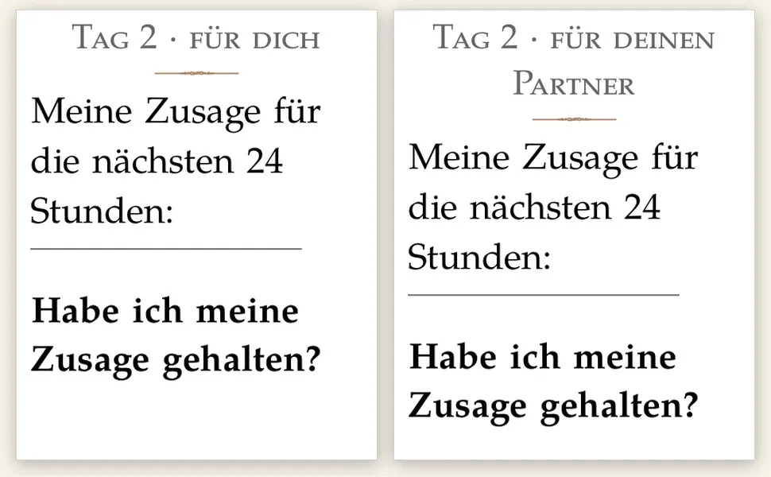
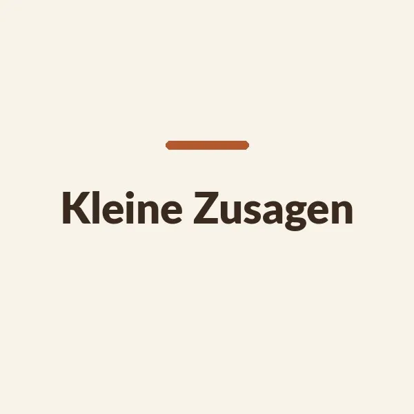
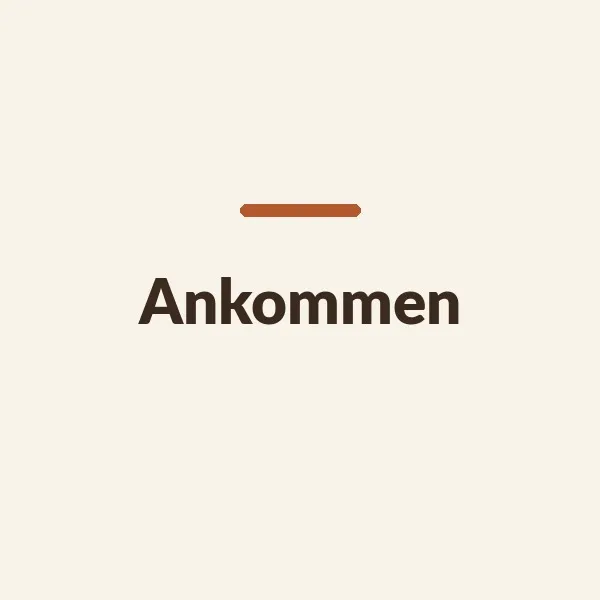
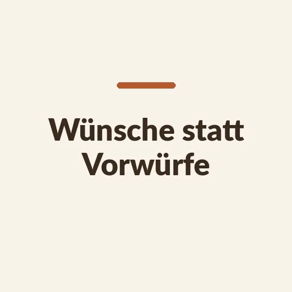
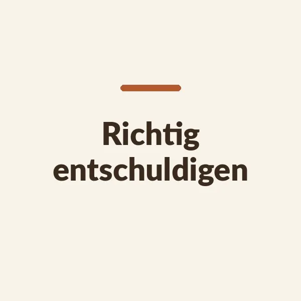

In 30 Tagen zu mehr Vertrauen in der Beziehung
Eine Übung pro Tag für Paare, die sich wieder aufeinander verlassen wollen.
Öffnet amazon.de in einem neuen Tab.
„Ich kümmer mich drum.“ Und du denkst nur noch: mal sehen.
In diesem Buch geht es um das leise Bröckeln: vergessene Zusagen, kleine Ausreden, Streits, die nie richtig zu Ende gehen. Das Buch geht davon aus, dass Vertrauen auf demselben Weg zurückkommen kann, in kleinen Schritten. Darum tut ihr etwas zusammen, statt nur darüber zu reden. Es geht um Verlässlichkeit und Ehrlichkeit, um Eifersucht, Kontrolle und Freiraum, um fairen Streit, alte Enttäuschungen und Geld. Hat dein Partner (noch) keine Lust, kannst du viele Aufgaben auch allein angehen. Geschrieben in der Du-Form und ohne Fachchinesisch. Wunder verspricht das Buch nicht. Wie viel sich verändert, hängt von euch ab.

Blick ins Buch: Zu jedem Tag eine Doppelseite für dich und deinen Partner
Jeder Tag beginnt mit einem kurzen Gedanken zum Thema. Dann kommen drei Situationen aus dem Alltag, jede in zwei Fassungen: So läuft es oft. Und so hätte es besser laufen können. Danach eure Aufgabe, Schritt für Schritt, Hilfe für den Fall, dass es hakt, und eine Frage zum Nachdenken. Die 30 Tage sind in fünf Teile gegliedert, von Verlässlichkeit bis Vertrauen festigen. Nach jedem Tag folgt eine Doppelseite zum Schreiben, direkt im Buch: links für dich, rechts für deinen Partner, mit denselben Fragen. Ob ihr einander zeigt, was ihr schreibt, entscheidet jeder selbst. Wühlt euch eine Aufgabe stark auf, gilt die Stopp-Regel: Pause machen und später oder gar nicht mehr darüber sprechen. Hilfsnummern stehen im Buch. Es ist ein Übungsbuch und ersetzt keine Beratung oder Therapie.
Lesen allein reicht nicht. Diese Aufgaben aus dem Buch probiert ihr im Alltag aus.

Kleine Zusagen halten
Jeder von euch gibt dem anderen eine kleine, klare Zusage für den nächsten Tag und hält sie. Was du schon länger versprochen hast, erledigst du bis zu einem festen Tag oder nimmst es ehrlich zurück.

Ein Ritual fürs Ankommen
Ihr erzählt euch, was ihr nach einem anstrengenden Tag braucht: erst reden, erst Ruhe oder eine Umarmung. Daraus macht ihr ein kurzes Ritual fürs Wiedersehen. Seht ihr euch kaum, reicht auch ein Zettel oder eine Sprachnachricht.

Wünsche statt Vorwürfe
Du baust einen Vorwurf, der dir oft rausrutscht, in drei Teile um: Was ist passiert? Wie geht es mir? Was wünsche ich mir? Wer den Wunsch hört, antwortet darauf: ja, nein oder mit einem Gegenvorschlag.

Sich richtig entschuldigen
Du entschuldigst dich für etwas eher Kleines, ohne Aber. Du sagst, was du getan hast, was es beim anderen ausgelöst hat und was du künftig anders machst. Der andere darf annehmen oder sich noch Zeit nehmen.
Dieses Buch ist ein Ratgeber und kein Ersatz für eine Therapie oder Beratung. Wenn es dir gerade richtig schlecht geht, hol dir bitte Hilfe, zum Beispiel bei der Telefonseelsorge unter 0800 111 0 111 (kostenlos, rund um die Uhr).
Öffnet amazon.de in einem neuen Tab.
Passt auch dazu


Mehr zum Thema Beziehung & Liebe
 500 Komplimente für eine liebevolle Beziehung500 Komplimente für deine Partnerin oder deinen Partner, sortiert nach zehn Themen. Aufschlagen, einen Satz aussuchen, fertig.
500 Komplimente für eine liebevolle Beziehung500 Komplimente für deine Partnerin oder deinen Partner, sortiert nach zehn Themen. Aufschlagen, einen Satz aussuchen, fertig. Tschüss TrennungsschmerzWas nach einer Trennung in dir passiert und was du selbst tun kannst, in deinem eigenen Tempo.Zwischen Alltag und uns140 Gesprächsfragen für Paare, die im Alltagstrubel wieder mehr voneinander erfahren wollen.
Tschüss TrennungsschmerzWas nach einer Trennung in dir passiert und was du selbst tun kannst, in deinem eigenen Tempo.Zwischen Alltag und uns140 Gesprächsfragen für Paare, die im Alltagstrubel wieder mehr voneinander erfahren wollen.